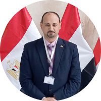

Jane Doe

Summary
A manger inspiring to be a Full Stack Web Developer with [2] years of
experience in designing and developing user interfaces, testing,
debugging, and training staff within eCommerce technologies. Proven
ability in optimizing web functionalities that improve data retrieval and
workflow efficiencies.
Education
-
Bachelor of Arts, English Department - University of Mansoura
(1994-1998)
Work Experience
Adminstrative Skills
- Customer service: ⭐️⭐️⭐️⭐️⭐️
- Microsoft Office Suite: ⭐️⭐️⭐️
- Organizational skills: ⭐️⭐️⭐️⭐️
- Time Management skills: ⭐️⭐️⭐️⭐️
Technical Skills
-
Proficient in front-end technologies: HTML5, CSS3, JavaScript (ES6+),
and frameworks like React.js and Angular.js.
-
Experienced in back-end development with Node.js, Express.js, and
working with databases such as MongoDB and MySQL.
-
Familiar with version control systems, particularly Git, and continuous
integration/deployment(CI/CD) practices.
- Strong understanding of RESTful API development and consumption.
-
Knowledgeable in web security practices and performance optimization.
Certifications
- Full Stack Web Development Certification
- more will be added ..........
Projects
Project name
Brief description of the project, highlighting any unique challenges faced
or innovative solutions applied.
click me
Languages
- Arabic - Native Speaker
- English - Excellent
- German - B1
- French - A1
Other